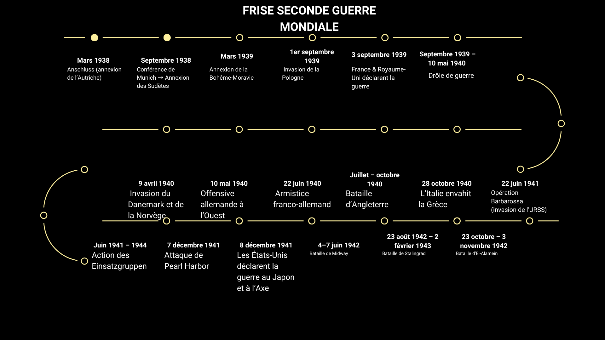
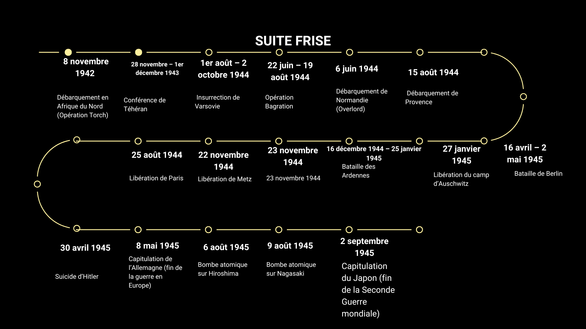

📘 Révisions 2GM – Accueil
🔵 Frise chronologique


📌 Cours rapide – Dates importantes
- 13 mars 1938 : Anschluss (Autriche)
- 30 septembre 1938 : Conférence de Munich / Sudètes
- 15 mars 1939 : Annexion de la Bohême-Moravie
- 1er septembre 1939 : Invasion de la Pologne
- 3 septembre 1939 : France et Royaume-Uni déclarent la guerre
- 3 septembre 1939 - 10 mai 1940 : Drôle de guerre
- 9 avril 1940 : Invasion du Danemark et de la Norvège
- 10 mai - 22 juin 1940 : Invasion Belgique, France, Pays-Bas
- 22 juin 1940 : Armistice franco-allemand
- 10 juillet - 31 octobre 1940 : Bataille d'Angleterre
- 28 octobre 1940 : Italie envahit la Grèce
- 22 juin 1941 : Opération Barbarossa (invasion URSS)
- Juin 1941 - 1944 : Actions des Einsatzgruppen
- 7 décembre 1941 : Attaque japonaise de Pearl Harbor
- 8 décembre 1941 : Entrée en guerre des États-Unis contre le Japon et ses alliés
- 4 au 7 juin 1942 : Bataille de Midway
- 23 août 1942 - 2 février 1943 : Bataille de Stalingrad
- 23 octobre - 3 novembre 1942 : Bataille d'El-Alamein
- 8 novembre 1942 : Débarquement anglo-américain en Afrique du Nord
- 28 novembre - 1er décembre 1943 : Conférence de Téhéran
- 22 juin - 19 août 1944 : Opération Bagration
- 1er août - 2 octobre 1944 : Insurrection de Varsovie
- 15 août 1944 : Débarquement de Provence (libération sud France)
- 6 juin 1944 : Débarquement de Normandie (opération Overlord)
- 25 août 1944 : Libération de Paris
- 22 novembre 1944 : Libération de Metz
- 23 novembre 1944 : Libération de Strasbourg
- 16 décembre 1944 - 25 janvier 1945 : Bataille des Ardennes
- 27 janvier 1945 : Libération du camp d’Auschwitz
- 16 avril - 2 mai 1945 : Bataille de Berlin
- 30 avril 1945 : Suicide d’Hitler
- 8 mai 1945 : Capitulation de l’Allemagne (fin guerre en Europe)
- 6 août 1945 : Bombardement atomique d’Hiroshima (140 000 morts)
- 9 août 1945 : Bombardement atomique de Nagasaki (73 000 morts)
- 2 septembre 1945 : Capitulation du Japon (fin Seconde Guerre mondiale)